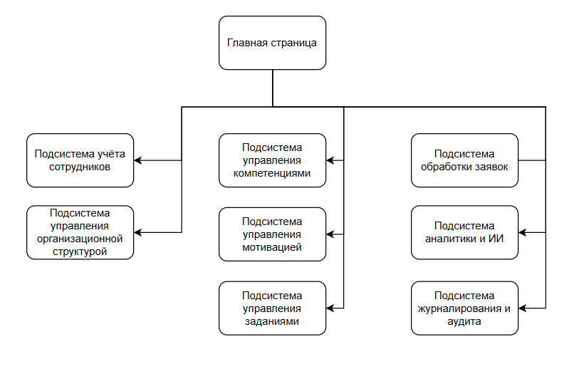

Описание подсистемы HR-менеджеров
Архитектура программного решения представляет из себя информационную систему с базой данных, WEB-API и ИИ-ассистентом. Помимо приложения для сотрудника, так же предполагается наличие отдельного приложения для HR-менеджеров. Это обусловлено необходимостью в грамотном управлении правами и ограничениями.
Для программного решения разрабатываются клиентские приложения для следующих ролей:
- HR-менеджера - для регистрации сотрудников, отслеживания информации о них, внесению информации о навыках, проверка навыков сотрудников (как в автоматическом или с помощью ИИ, а так же вручную) и т.п.
- Сотрудника - для просмотра информации о карьерных треках (включая текущий), занимаемой должности, балансе бонусов, новых заданиях, общение с чат-ботом и т.п. Более подробно в описании бизнес-логики приложения сотрудника.
Описание системы (Бизнес-логика)
Приложение HR-менеджера предназначено для администрирования данных системы. Он отслеживает информацию о карьере сотрудников, вносит информацию о новых заданиях, внутриигровых ценных вознаграждениях; ведёт информацию о значимых в компании и подтверждаемых навыках.
Подсистема поддерживает возможность решать следующие задачи:
- регистрация в системе новых сотрудников
- ведение информации о карьерных путях, их должностей и необходимых навыках, а так же возможные ответвления к другим карьерным путям
- открывать вакансии на должности для поиска соискателей внутри компании
- ведение информации о значимых в компании и подлежащих подтверждению навыках
- ведение информации о ценных вознаграждениях во внутриигровом магазине, изменять их ценность
- получение уведомлений о запросах на подтверждение навыка и/или заявление претендента на новую актуальную должность
- ведение информации о заданиях за вознаграждение
- ведение информации о наградах(ачивках)
- отслеживание данных о транзакциях над балансом внутриигровых баллов сотрудников
Описание сущностей
В приложении содержатся следующие сущности:
- Сотрудник - рабочий кадр организации
- Карьера - это линейный граф, который описывает последовательность должностей (грейд) в рамках этой карьеры; у карьеры может быть список ссылок на последующие возможные карьерные пути, путь к которым открывается сотруднику по достижению последней должности (или лучше сделать список следующих карьер у должности?)
- Должность - это позиция сотрудника в организации, указывается в рамках карьерного пути; должность имеет список навыков
- Навык - это возможное умение сотрудника, которое может быть полезно в рамках работы в организации
- Грейд - это псевдоним названия уровня навыка или должности (например, уровень 1 - junior); необязателен, но может помочь
- Достижение - это отметка о некотором ранее значимом действии пользователя (ачивка)
- Транзакция - это операция, влияющая на баланс бонусов пользователя
- Журнал событий - это история событий пользователя, связанных с бизнес-процессом приложения, оформленный по шаблону;
- Товар - это некоторое вознаграждение, которое сотрудник может обменять на баллы
- Роли - список доступных в системе ролей, которые обозначают набор разрешений, прав и ограничений (у пользователя может быть несколько ролей)
- Задание - это некоторое требование, которое может быть назначено как всем сотрудникам, так и конкретному
Описание функций
В приложении доступны следующие функции:
- аутентификация по логину и паролю
- регистрация сотрудника в системе (с генерацией токена, который можно предоставить как простом виде, так и в виде ссылки или QR-кода на страницу подтверждения)
- просмотр информации профилей сотрудников (включая баланс внутриигровых бонусов, а так же транзакций)
- модификация и просмотр информации о внутриигровых ценных вознаграждениях (товарах) с возможностью изменения цен и просмотра истории изменения цен
- модификация и просмотр информации о карьерах, их цепочки должностей
- модификация и просмотр информации о грейдах
- модификация и просмотр информации о навыках
- модификация и просмотр информации о заданиях
- модификация и просмотр информации о курируемых сотрудниках (тех, чью карьеру он отслеживает)
- просмотр статистических данных сотрудников (навыки и уровень их освоения, текущую должность и т.п.)
- изменение информации о должности сотрудника, его значимых в организации навыках, полученных наградах и транзакциях
- получение отчётов об анализе карьерной деятельности сотрудников, просмотр статистики и статистических выводов и получение советов (анализ трендов)
Описание правил и ограничений
- Первого HR-менеджера в системе регистрирует администратор программного решения путём ручного внесения информации "нулевого" пользователя
- HR-менеджер не может зарегистрировать в системе себя в качестве сотрудника
- В приложении HR-менеджера, пользователю доступны только те действия, которые назначены непосредственно роли “HR-менеджер”
- Любые значимые действия в системе журналируются (заносятся в логи)
- Транзакции над балансом сотрудника не удаляются (при необходимости корректировки - производятся соответствующие транзакции с пояснениями)
- Любые события, связанные со значимыми действиями, выполняемые над данными сотрудника, подлежат своевременному оповещению целевого сотрудника
- Начисление баллов может происходить в разных режимах: ручная (HR), автоматизированная (с помощью скриптов), или AI
- Получение информации системы происходит посредством доступа к WebApi
Описание подсистем приложения

Подсистема аутентификации и управления доступом
- аутентификация HR-менеджеров;
- управление ролями и правами доступа;
- контроль сессий;
- аудит административных действий.
Главная страница
На главной странице отображаются контроллеры (кнопки, слайдеры и т.п.) верхнего уровня, которые прямо или транзитивно предоставляют доступ ко всем возможным функциям приложения HR-менеджера. Так же, на ней отображаются наиболее часто используемые данные (такие как уведомления, статистика по количеству новых подтверждений навыкоа, заявки на подтверждение и т.п.).
Подсистема учета сотрудников
Предназначена для сопровождения жизненного цикла сотрудника в системе:
- регистрация и подтверждение учетной записи;
- назначение и изменение должности;
- изменение карьерного пути;
- управление статусом сотрудника;
- ведение списка курируемых сотрудников;
- просмотр истории изменений.
Подсистема управления организационной структурой
- управление карьерными путями;
- управление должностями;
- настройка переходов между карьерами;
- управление вакансиями;
- определение требований к компетенциям.
Подсистема управления компетенциями
- ведение перечня навыков;
- настройка уровней навыков;
- определение механизма подтверждения;
- обработка заявок на подтверждение;
- контроль сроков действия навыков;
- аналитика покрытия компетенций.
Подсистема управления мотивацией
- управление бонусной системой;
- контроль транзакций;
- управление каталогом товаров;
- управление достижениями;
- настройка автоматических правил начисления.
Подсистема управления заданиями
- создание и редактирование заданий;
- назначение заданий;
- контроль выполнения;
- автоматизация подтверждения;
- интеграция с внешними сервисами.
Подсистема обработки заявок
- обработка запросов на подтверждение навыков;
- обработка откликов на вакансии;
- рассмотрение заявок на повышение или изменение грейда;
- выполнение массовых операций.
Подсистема аналитики и ИИ
- формирование аналитических отчетов;
- визуализация статистических данных;
- прогнозирование кадровых показателей;
- формирование рекомендаций;
- чат-интерфейс взаимодействия с ИИ-ассистентом.
Подсистема журналирования и аудита
- логирование действий сотрудников;
- логирование действий HR-менеджеров;
- контроль критически значимых операций;
- формирование отчетов для внутреннего контроля.